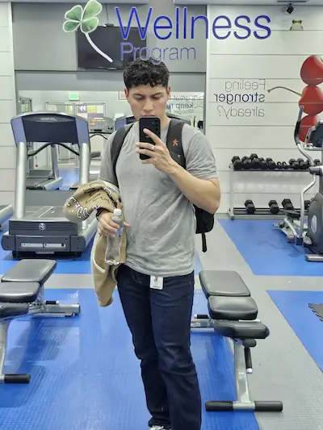

Bryan Enrique Vasquez Iraheta | WDD 130
I'm from El Salvador and I'm 23 years old. I currently work in a call center for a Israeli company dedicated to web development through templates. I'm an ex missionary and served in Puerto Rico and in my own country from 2019-2022